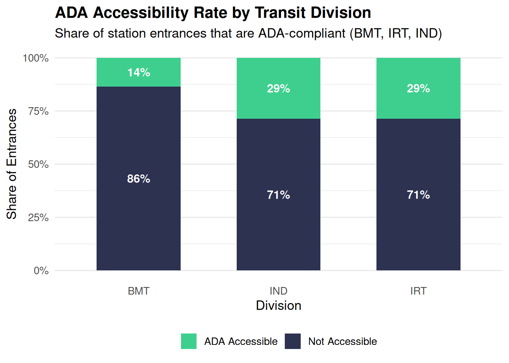
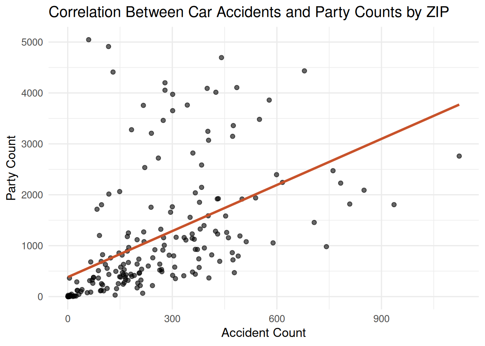
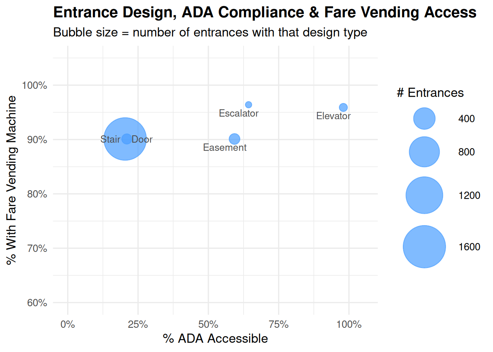

# Connect to an in-memory DuckDB database
con <- dbConnect(duckdb::duckdb(), dbdir = ":memory:")Access, Accidents, and Community: A NYC Data Analysis
Overview
This project explores several datasets related to New York City — including subway transit infrastructure, traffic accidents, neighborhood census data, and party permit records. Using DuckDB and SQL within R, we designed a relational database, queried it to answer specific research questions, and visualized the findings. Our central themes revolve around accessibility, neighborhood demographics, and public safety patterns across NYC ZIP codes.
Accessing Data
We connect to an in-memory DuckDB database, which allows us to run SQL queries directly on our CSV files without needing an external database server. All datasets are loaded into named tables for querying.
Designing the Database
Each dataset is read directly from its CSV file into a DuckDB table using read_csv_auto(), which infers column types automatically. This approach follows a clean DDL workflow — defining the structure of the database before querying it — and makes the pipeline fully reproducible from raw files.
# Transit table: NYC subway entrance and station-level data
dbExecute(con, "
CREATE TABLE transit AS
SELECT * FROM read_csv_auto('NYC_Transit_Data.csv', header = TRUE)
")[1] 1868# Census table: NYC neighborhood-level demographic data from the 2020 census
dbExecute(con, "
CREATE TABLE census AS
SELECT * FROM read_csv_auto('NYC_neighborhood_census_data_2020.csv', header = TRUE)
")[1] 59# Accidents table: NYC traffic collision records from 2020
dbExecute(con, "
CREATE TABLE accidents AS
SELECT * FROM read_csv_auto('NYC Accidents 2020.csv', header = TRUE)
")[1] 74881# Parties table: NYC party/event permit data, aggregated by ZIP code
dbExecute(con, "
CREATE TABLE parties AS
SELECT * FROM read_csv_auto('party_in_nyc.csv', header = TRUE)
")[1] 225414# Neighborhoods table: NYC neighborhood socioeconomic indicators
dbExecute(con, "
CREATE TABLE neighborhoods AS
SELECT * FROM read_csv_auto('NYC_nbr_data.csv', header = TRUE)
")[1] 59# Confirm all tables were created successfully
dbListTables(con)[1] "accidents" "census" "neighborhoods" "parties"
[5] "transit" Querying Data Using SQL
With our database set up, we use SQL to answer several research questions about NYC transit, demographics, and public safety. Each query targets a specific question and is documented below.
Query 1: ADA Accessibility by Transit Division
The NYC subway is divided into three historical divisions — BMT, IRT, and IND. Here we examine how ADA accessibility is distributed across these divisions, counting total entrances, accessible entrances, and computing the compliance percentage for each.
-- Count total entrances, ADA-accessible entrances, and compute percentage
-- grouped by transit division (BMT, IRT, IND)
SELECT
Division,
COUNT(*) AS total_entrances,
SUM(CASE WHEN ADA = TRUE THEN 1 ELSE 0 END) AS ada_accessible,
COUNT(*) - SUM(CASE WHEN ADA = TRUE THEN 1 ELSE 0 END) AS not_accessible,
ROUND(
SUM(CASE WHEN ADA = TRUE THEN 1 ELSE 0 END) * 100.0 / COUNT(*), 1
) AS pct_ada_accessible
FROM transit
GROUP BY Division
ORDER BY pct_ada_accessible DESC# Preview ADA accessibility summary by division
print(df_ada) Division total_entrances ada_accessible not_accessible pct_ada_accessible
1 IND 726 208 518 28.7
2 IRT 700 200 500 28.6
3 BMT 442 60 382 13.6Query 2: Car-Free Commute vs. NY-Born Residents in High Income-Diversity Neighborhoods
This query asks whether neighborhoods with high income diversity tend to have residents who both commute without cars and were born in New York State. We filter to neighborhoods with an income diversity ratio of 7.0 or higher to focus on the most economically mixed areas.
-- Looking at whether car-free commuting correlates with NY nativity
-- in neighborhoods with high income diversity (ratio >= 7.0)
-- Looking at whether car-free commuting correlates with NY nativity
-- in neighborhoods with high income diversity (ratio >= 7.0)
SELECT
"Car-free commute (% of commuters)" AS car_free_pct,
"Born In New York State" AS born_in_ny
FROM neighborhoods
WHERE "Income diversity ratio" >= 7.0
ORDER BY "Born In New York State"Query 3: Are ZIP Codes With More Parties Subject to More Accidents?
To investigate whether neighborhood social activity (measured by party permits) is associated with higher traffic accident rates, we JOIN the accidents and parties tables on ZIP code. This lets us compare both counts side by side at the ZIP level.
-- Aggregate accident counts and party counts per ZIP code,
-- then JOIN the two tables to compare them side by side
SELECT
a."ZIP CODE" AS zip,
COUNT(DISTINCT a.rowid) AS coli_count,
COUNT(DISTINCT p.rowid) AS party_count
FROM accidents AS a
LEFT JOIN parties AS p
ON a."ZIP CODE" = p."Incident Zip"
WHERE a."ZIP CODE" IS NOT NULL
GROUP BY a."ZIP CODE"
ORDER BY zip
LIMIT 1000Query 4: Homeownership, Children, and Foreign-Born Population
This query examines whether homeownership rates are associated with higher rates of households with children in predominantly immigrant neighborhoods — defined here as neighborhoods where more than 50% of residents are foreign-born.
-- Does a higher homeownership rate correlate with more households
-- with children in predominantly immigrant neighborhoods?
SELECT
"Homeownership rate" AS homeownership_rate,
"Households with children under 18 years old" AS households_with_children,
"Foreign-born population" AS foreign_born_pct
FROM neighborhoods
WHERE "Foreign-born population" >= 50
ORDER BY "Homeownership rate"Query 5: Top Contributing Accident Factors by ZIP Code
Building on Query 3, we drill deeper into the accident data to find the most common contributing vehicle factor for collisions in each ZIP code. This helps identify whether certain neighborhoods share systemic causes of accidents.
-- What is the most common contributing vehicle factor
-- for accidents in each ZIP code?
SELECT
"ZIP CODE" AS zip,
"CONTRIBUTING FACTOR VEHICLE 1" AS contributing_factor,
COUNT(*) AS acc_count
FROM accidents
WHERE "ZIP CODE" IS NOT NULL
GROUP BY "ZIP CODE", "CONTRIBUTING FACTOR VEHICLE 1"
ORDER BY zip, acc_count DESCQuery 6: ADA Compliance and Vending by Entrance Type
Finally, we look at how different subway entrance designs compare on two dimensions: ADA compliance and access to fare vending machines. Only entrance types with more than 5 records are included to avoid noise from rare categories.
-- For each entrance design type, compute ADA compliance rate
-- and the share of entrances that have fare vending machines
SELECT
"Entrance Type",
COUNT(*) AS total,
SUM(CASE WHEN ADA = TRUE THEN 1 ELSE 0 END) AS ada_count,
ROUND(SUM(CASE WHEN ADA = TRUE THEN 1 ELSE 0 END) * 100.0 / COUNT(*), 1) AS pct_ada,
ROUND(AVG(CASE WHEN Vending = 'YES' THEN 1.0 ELSE 0.0 END) * 100, 1) AS pct_has_vending
FROM transit
GROUP BY "Entrance Type"
HAVING COUNT(*) > 5
ORDER BY pct_ada DESCData Visualizations
The following visualizations summarize key findings from our SQL queries. Each plot is designed to highlight a pattern that would be difficult to see from the raw query output alone.
Visualization 1: ADA Accessibility Rate by Division
This stacked bar chart shows what proportion of subway entrances in each division are ADA-accessible. The percentage labels make it easy to compare compliance rates across BMT, IRT, and IND at a glance.
# Reshape df_ada to long format for a stacked bar chart
df_ada_long <- df_ada |>
pivot_longer(
cols = c(ada_accessible, not_accessible),
names_to = "status",
values_to = "count"
) |>
mutate(status = recode(status,
"ada_accessible" = "ADA Accessible",
"not_accessible" = "Not Accessible"
))
ggplot(df_ada_long, aes(x = Division, y = count, fill = status)) +
geom_col(position = "fill", width = 0.6) +
geom_text(
aes(label = paste0(round(count / total_entrances * 100, 0), "%")),
position = position_fill(vjust = 0.5),
color = "white", size = 4, fontface = "bold",
data = df_ada_long |> left_join(df_ada |> select(Division, total_entrances))
) +
scale_y_continuous(labels = percent_format()) +
scale_fill_manual(values = c("ADA Accessible" = "#3ecf8e", "Not Accessible" = "#2d3250")) +
labs(
title = "ADA Accessibility Rate by Transit Division",
subtitle = "Share of station entrances that are ADA-compliant (BMT, IRT, IND)",
x = "Division", y = "Share of Entrances", fill = NULL
) +
theme_minimal(base_size = 13) +
theme(
plot.title = element_text(face = "bold"),
legend.position = "bottom",
panel.grid.major.x = element_blank()
)Joining with `by = join_by(Division, total_entrances)`
Visualization 2: Accidents vs. Party Counts by ZIP Code
This scatter plot pairs each ZIP code’s accident count with its party permit count. A linear regression line is overlaid to assess the overall trend. The R-squared value gives us a quantitative measure of how strongly the two are related.
ggplot(df_zip_acc_party, aes(x = coli_count, y = party_count)) +
geom_point(alpha = 0.6) +
geom_smooth(method = "lm", se = FALSE, color = "#c8522a") +
labs(
title = "Correlation Between Car Accidents and Party Counts by ZIP",
x = "Accident Count",
y = "Party Count"
) +
theme_minimal(base_size = 13)`geom_smooth()` using formula = 'y ~ x'
# R-squared: how much variance in party count is explained by accident count
summary(lm(party_count ~ coli_count, data = df_zip_acc_party))$r.squared[1] 0.2531175# The correlation is relatively low, suggesting ZIP-level accident frequency
# is a weak predictor of party permit activityVisualization 3: Entrance Design, ADA Compliance & Vending Access
This bubble chart places each entrance type along two axes — ADA compliance rate and fare vending availability — with bubble size reflecting how common that entrance type is across the system. It reveals whether the most accessible entrance types also tend to have better fare infrastructure.
ggplot(df_entrance, aes(
x = pct_ada, y = pct_has_vending,
size = total, label = `Entrance Type`
)) +
geom_point(color = "#4a9eff", alpha = 0.7) +
geom_text_repel(size = 3.5, color = "grey30", max.overlaps = 10) +
scale_size_area(max_size = 20) +
scale_x_continuous(limits = c(0, 105), labels = function(x) paste0(x, "%")) +
scale_y_continuous(limits = c(60, 105), labels = function(x) paste0(x, "%")) +
labs(
title = "Entrance Design, ADA Compliance & Fare Vending Access",
subtitle = "Bubble size = number of entrances with that design type",
x = "% ADA Accessible",
y = "% With Fare Vending Machine",
size = "# Entrances"
) +
theme_minimal(base_size = 13) +
theme(
plot.title = element_text(face = "bold"),
legend.position = "right"
)
Sources
- NYC Transit Data: https://www.kaggle.com/datasets/monsieurwagner/nyctransit
- NYC Subway Traffic Data: https://www.kaggle.com/code/eddeng/nyc-subway-traffic-data-preprocessing/data
- NYC Party Data: https://www.kaggle.com/datasets/somesnm/partynyc
- NYC Traffic Accidents: https://www.kaggle.com/datasets/amanaayush/nyc-traffic-accidents
- AI Assistance: ChatGPT / Claude were consulted for debugging SQL syntax and ggplot2 formatting